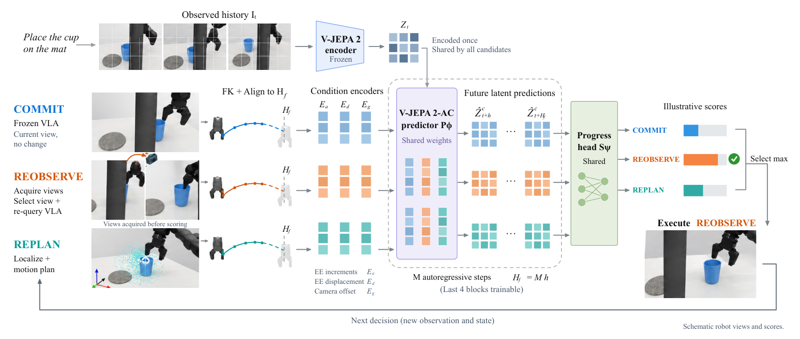
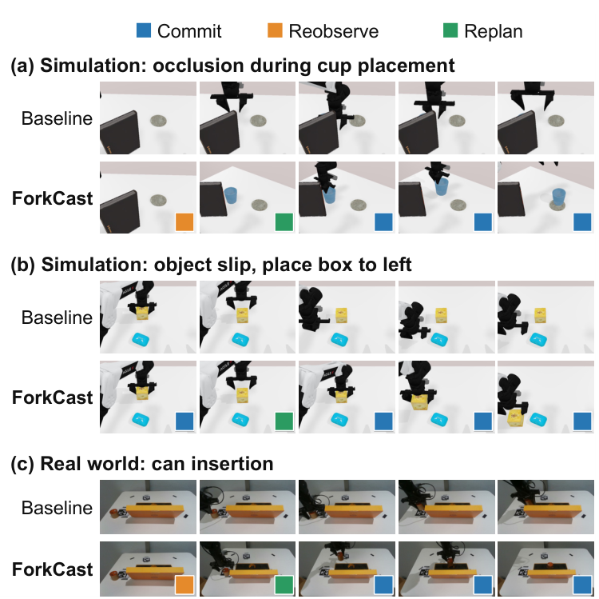
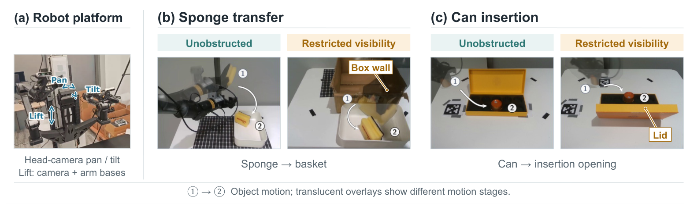
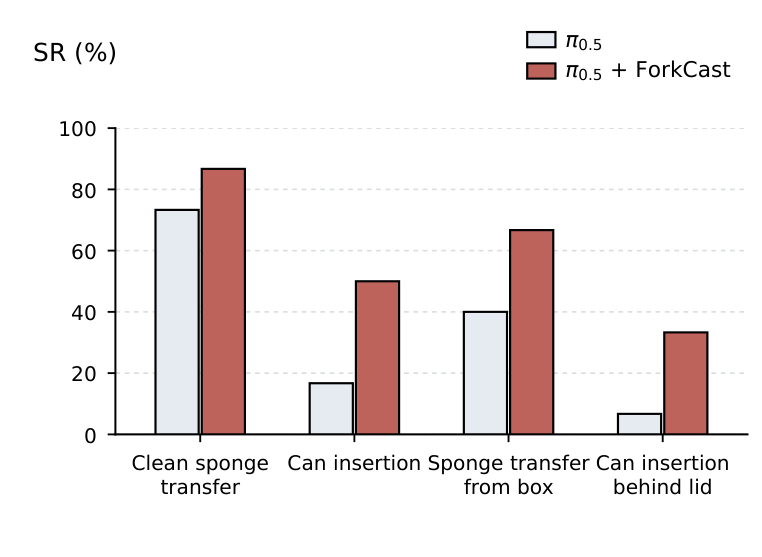

ForkCast: Predictive Recovery for Vision-Language-Action Policies via Counterfactual Futures
1Mohamed bin Zayed University of Artificial Intelligence 2Virginia Tech
* equal contribution † corresponding author
Under review at IEEE ICRA 2027

Abstract
Vision–language–action (VLA) policies perform manipulation tasks using camera images and language instructions, but object slip or visual occlusion can disrupt execution. Recovery is typically learned during policy training or delegated to a monitor that triggers a scripted repair after detecting a failure. We introduce ForkCast, a predictive recovery framework that compares counterfactual futures to determine whether and how to intervene in a frozen VLA policy. At each decision point, ForkCast evaluates three candidates: executing the policy's nominal action chunk (COMMIT), adjusting the camera viewpoint (REOBSERVE), and replanning the arm trajectory (REPLAN). A candidate-conditioned world model forecasts the latent outcome of each candidate at a common future horizon, and a shared task-progress head scores the predicted outcomes. By evaluating the policy's own continuation alongside the repair candidates, a single comparison based on task progress determines both whether and how to intervene, without a failure detector, an intervention threshold, or updates to the VLA backbone. On five simulated RoboTwin 2.0 tasks with injected occlusion and object slip, ForkCast increases pooled success from 13.3% for the frozen π0.5 policy to 30.0% and transfers to two additional VLA backbones without retraining. After adaptation on real-robot candidate rollouts, ForkCast also improves success over the base policy under clean and visibility-limited conditions.
Method

Each candidate is encoded by its planned arm motion and camera offset. An adapted latent world model predicts the candidate's endpoint latent at a common horizon, so that continuations of different duration are compared at the same future time. A shared progress head maps these latents to task-progress scores. Training data come from branches: alternative candidates are executed from the same decision state, and the encoded futures and progress labels supervise prediction and scoring.
Simulation results
Five RoboTwin 2.0 tasks. Closed-loop success (%). Slip and occ are injected object displacement and visual occlusion; pooled-OOD averages the two.
| Method | Clean | Slip | Occ | Pooled-OOD |
|---|---|---|---|---|
| COMMIT (frozen policy) | 53.3 | 10.0 | 16.7 | 13.3 |
| Always REOBSERVE | 36.7 | 10.0 | 23.3 | 16.7 |
| Always REPLAN | 70.0 | 33.3 | 10.0 | 21.7 |
| ForkCast | 76.7 | 33.3 | 26.7 | 30.0 |
No fixed strategy leads under both disturbances; ForkCast is best or tied in every column.
The selector trained on π0.5 branches transfers to two other backbones without retraining:
| Backbone | Clean | Slip | Occ | Pooled-OOD |
|---|---|---|---|---|
| RDT | 10.0 | 3.3 | 6.7 | 5.0 |
| RDT + ForkCast | 33.3 | 33.3 | 13.3 | 23.3 |
| XR-0 | 16.7 | 0.0 | 0.0 | 0.0 |
| XR-0 + ForkCast | 56.7 | 30.0 | 13.3 | 21.7 |

Real robot
A dual-arm AgileX PiPER with a pan/tilt head camera on a lift that also carries both arm bases. π0.5 is fine-tuned on 50 demonstrations per task and frozen. ForkCast starts from the simulation-trained weights and is fine-tuned on real COMMIT / REOBSERVE / REPLAN branches from 30 local states per task. Each setting uses 30 trials per method.


Real-robot rollouts
Limitations
ForkCast selects among three candidate types; it does not give the frozen backbone new manipulation skills, so its performance is bounded by the available candidates. Camera probing happens before scoring, so a REOBSERVE candidate costs a physical camera motion even when COMMIT is finally chosen.
BibTeX
@article{wen2026forkcast,
title = {ForkCast: Predictive Recovery for Vision-Language-Action Policies via Counterfactual Futures},
author = {Wen, Chenru and Zeng, Huajian and Ding, Haokai and Kang, Jian and Duan, Anqing and
Zhou, Dawei and Song, Dezhen and Zuo, Xingxing},
journal = {arXiv preprint arXiv:2610.18650},
year = {2026}
}